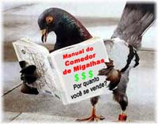

O Caso de Polícia orgulhosamente apresenta mais um artigo enviado por um amigo, desta vez, o Inspetor Francisco Chao, policial civil no Rio de Janeiro. Vamos lá:
O “Migalhismo”
por Francisco Chao de la Torre *A manipulação e interpretação parcial de notícias por parte de certos segmentos da mídia, principalmente quando o objeto da notícia é a Polícia, é um fato incontestável, só não vê quem não quer, ou, então porque sofre de oligofrenia, talvez causada pelo nocivo hábito, intelectualmente falando, de assistir telenovelas e programas mais idiotas ainda, como, por exemplo, os da série Big Brother e assemelhados.
Digo isso em razão da enorme repercussão alcançada pela manifestação dos policiais civis paulistas que terminou em pancadaria, tiros e granadas de gás, em 16.10.2008, nas cercanias do Palácio Bandeirantes e que, como não poderia deixar de ser, foi explorada à exaustão pela mídia, que noticiou o fato com chamadas ao vivo durante toda a tarde daquele dia, com destaque para as cenas de violência.
Durante e após tão lamentável evento, conversei pelo rádio com vários amigos meus que são policiais civis paulistas e que, inclusive, estavam no local, e percebi neles uma enorme decepção e um verdadeiro estarrecimento com a atitude dos policiais militares do CP Choque, já que, na manifestação, inicialmente pacífica, mas que foi duramente reprimida pelos policiais militares paulistas, havia também diversas mulheres de policiais militares, assim como vários policiais militares reformados, os quais, ao contrário dos policiais militares da ativa, podem se manifestar livremente, sem medo de ameaças ou punições. Além disso, qualquer aumento salarial obtido pelos policiais civis, cuja greve já dura mais de um mês, será estendido aos policiais militares, já que, no Estado de São Paulo, os salários das duas corporações estão legalmente atrelados.Destarte, em razão da severa repressão levada a efeito pelos policiais militares paulistas durante a referida manifestação, mulheres de policiais militares e policiais militares reformados também foram alvo de tiros e granadas de gás, o que pouco foi noticiado pela mídia, que preferiu destacar as cenas em que policiais, militares e civis, de armas em punho, se enfrentavam.
Acuados e agredidos violentamente, os policiais civis presentes à manifestação pediram socorro através de seus telefones celulares ao Centro de Comunicações da Polícia Civil paulista, que destacou para o local, em caráter de urgência, diversas unidades do GARRA e do GOE, além de outras unidades policiais próximas do local.
Era, portanto, uma simples caminhada e manifestação pacífica que, rapidamente, transformou-se em uma batalha campal, com feridos de ambos os lados, cujo saldo, além dos feridos, foi uma enorme e mútua mágoa, e ânimos até hoje exaltados, o que é natural nessas circunstâncias.
Na próxima 4ª feira, dia 22.10.2008, vai haver nova passeata da PCSP, agora em direção à ALESP, só que desta vez, há, latente, um enorme sentimento de beligerância, esperando apenas uma pequena oportunidade para desabrochar …
Mas, na minha humilde opinião, o que de mais lamentável houve nesse triste episódio foi ver policiais civis e militares enfrentando-se uns aos outros, aos tiros, enquanto o grande responsável pela tragédia, justamente o comandante das duas forças policiais, encontrava-se, incólume, dentro de seu gabinete, cercado e aconselhado por seus secretários, assessores e consultores.
Creio, entretanto, que um dos principais assessores do Governador José Serra faltou justo nesse dia...
Foi o “Assessor Especial para Assuntos Aleatórios que vão dar Merda”...
Entretanto, refeito do susto, e provavelmente logo após demitir o assessor faltoso, José Serra, com a maior cara de pau do mundo, foi para a mídia dizer que a culpa de tudo era de um grupo de sindicalistas e de um deputado oposicionista que queriam “fazer política” em cima dos policiais.
Como se ele, José Serra, e, infelizmente para nós, policiais cariocas, o desditoso Sérgio Cabral, não fizessem isso o tempo todo, ou seja, política.
Mas, se, pelo menos, eles fizessem política de qualidade, verdadeira, ao invés de politicagem barata e demagogia, tudo bem, faz parte da Democracia, mas, infelizmente, nós sabemos muito bem qual é a deles, como é que eles “fazem política” não é verdade?
Aliás, o nosso mui amado governador, exímio viajante e xingador, toda vez que nós, aqui no RJ, “colocamos o bloco na rua”, vai para a imprensa e diz que isso é coisa de “meia dúzia de sindicalistas oportunistas, com objetivos políticos”.
Curioso é que ele, Sérgio Cabral, apregoa publicamente sua enorme predileção, admiração e afeto pelo Presidente Lula, gabando-se inclusive de consultá-lo todos os dias pelo telefone, antes de ir dormir.
Ora, mas o Presidente Lula não foi justamente isso, um “sindicalista com objetivos políticos”?
Curioso, não?
Ainda a propósito do lamentável enfrentamento entre policiais civis e militares paulistas, lembro que, em nossa última greve, no ano passado, no episódio em que cercamos o IML da Rua dos Inválidos, e chamamos a Secretaria Municipal de Vigilância Sanitária para vistoriar e, quiçá, interditar o prédio, que, como todos sabem, é muito bem conservado, limpo, e está em excelentes condições de funcionamento (que o digam os infelizes vizinhos do IML e os policiais que trabalham no mesmo) o governo estadual cogitou mandar o BP Choque da PMERJ ao local, para acabar com a manifestação dos policiais civis.
Soube disso por fontes de dentro da própria PMERJ, que me ligaram e avisaram do que ocorria, naquele momento, nos bastidores governamentais …
Liguei de imediato para o Wagner Montes, que ligou para o Comandante Ubiratan e avisou a ele que o clima era muito tenso no local, e que poderia haver um confronto armado entre policiais civis e militares, se o BP Choque fosse enviado ao local.
Pelo que eu soube depois, o Comandante Ubiratan, com muita inteligência e sensibilidade, peitou a solicitação do governo, e disse que se o problema era da PCERJ, que a CORE fosse acionada, e não o BP-Choque …
Aí o chefe da PCERJ cogitou de mandar a CORE para o IML, para, em suas doutas palavras, “acabar com aquela baderna” mas desistiu, porque foi avisado de que havia um grande risco de confronto armado, já que a tensão no local era grande…
Quem estava lá lembra muito bem de tudo isso ...
Éramos cerca de 400 policiais civis, reunidos na rua, em frente a portaria principal do IML.
As imagens de áudio e vídeo não me deixam mentir
Que loucura, não?
Situação kafkaniana essa, não é verdade?
A que ponto os poderosos são capazes de chegar…
E que enorme temor sentem de nós…
Sim, sentem medo de nós, pois, se não tem medo, porque mandam seus “garotos de recado”?
Por que não nos enfrentam, pessoalmente?
Talvez tenham medo de ouvir: "fora daqui, político mentiroso"...
Enfim...
Em todas as manifestações e passeatas que participei, organizei ou liderei, seja na ALERJ, nas ruas da cidade ou na porta do Palácio Guanabara, sempre tive muito cuidado em compreender e respeitar os policiais, civis ou militares, que, embora intimamente quisessem estar ao meu lado, não o faziam por medo de perseguições ou punições, que, inclusive, são sempre muito mais severas no ambiente castrense.
Evidentemente, algumas vezes, deparei-me com alguns pobres-coitados, que, contaminados pelo “migalhismo” me trataram com deboche, desprezo ou até mesmo hostilidade, mas, felizmente, eles são uma minoria, relevante, é verdade, mas, ainda assim, uma minoria.
Ah, você não sabe o que é “migalhismo”?
Desculpe.
O “migalhismo” é uma doença nova, recentemente descoberta pela Medicina, que acomete certos servidores públicos, civis ou militares, de alta ou baixa patente e que, acercando-se do Poder, em troca de algumas “migalhas”, tais como promoções intempestivas e sucessivas, por bravura e merecimento, medalhas, gratificações, cursos no exterior remunerados, carros oficiais, cargos em comissão, etc, comportam-se de forma subserviente, e, o que é pior, sentem-se felizes e até agradecidos por essa enorme “honraria”, qual seja, a de serem reduzidos à condição de servos.Mas, como eu disse, eles são uma minoria.
Porque a grande maioria dos policiais, sejam eles civis ou militares, estão, atualmente, irmanados pelas dificuldades financeiras e o desprezo e caradurismo governamental… mas, pelo menos, não sofrem dessa desgraçada doença cujo sintoma maior é o embotamento do caráter...
Alguns médicos dizem, inclusive, que no seu estágio mais avançado, o "migalhismo" faz com que os doentes se comportem como cães, abanando o rabo para seus donos, e rosnando para aqueles que consideram uma ameaça aos interesses de seus senhores...
Porém, como eu disse, a grande maioria dos policiais está, atualmente, irmanada …
Afinal de contas, “a merda une”, não é verdade?
E, quem sabe, essa maioria, ao perceber isso, não se transforme numa verdadeira legião…
E aí, se Deus quiser, não atiraremos mais uns nos outros … nem em nossas esposas e velhos e cansados companheiros
Nem nos acusaremos ou xingaremos mutuamente ...
Não, nunca mais faremos isso …
Porque somos todos policiais, servidores públicos sim, mas não devemos subserviência ao (des)governante da ocasião, mas somente ao POVO, nosso único e verdadeiro patrão, a quem, um dia, juramos servir e proteger, ainda que com o sacrifício de nossas próprias vidas.
É o que eu, sinceramente, espero.
Porque eu acredito na construção de um mundo mais justo e perfeito.
E, nesse mundo, os maus não vencem, porque os bons estão vigilantes.
Abraços.
* Artigo assinado por Francisco Chao de la Torre., Inspetor da Polícia Civil do Rio de Janeiro.